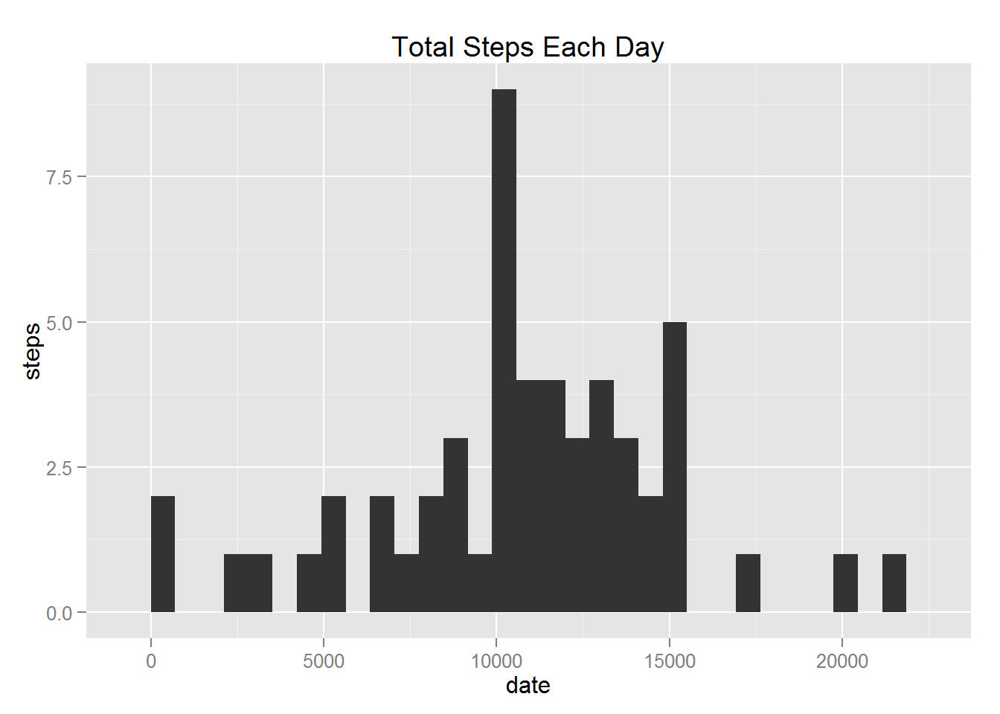
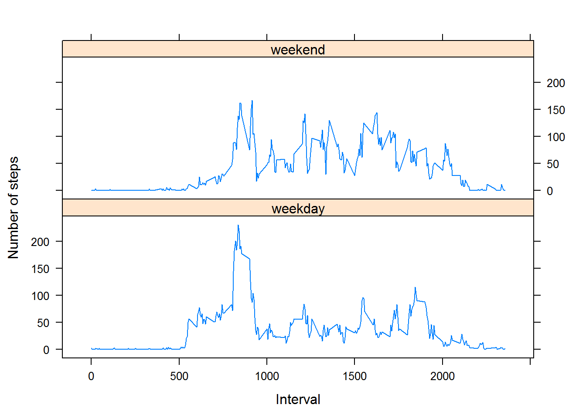

Reproducible Research: Peer Assessment 1
Loading and preprocessing the data
1.Load the data
activity <- read.csv("activity.csv")2.Transform the data
activity$date <- as.Date(activity$date, "%Y-%m-%d")What is mean total number of steps taken per day?
- Make a histogram of the total number of steps taken each day
steps.date <- aggregate(steps ~ date, data = activity, FUN = sum)
hist(steps.date$steps, main = "Total Steps Each Day", xlab = "date", ylab = "steps", col="blue")
- Calculate and report the mean and median of the total number of steps taken per day
mean_step <- mean(steps.date$steps)
median_step <- median(steps.date$steps)Mean: 1.076618910^{4} Median: 10765
What is the average daily activity pattern?
1.Make a time series plot (i.e. type = “l”) of the 5-minute interval (x-axis) and the average number of steps taken, averaged across all days (y-axis)
average_steps.interval <- aggregate(steps ~ interval, data = activity, FUN = mean)
plot(average_steps.interval, type = "l")
2.Which 5-minute interval, on average across all the days in the dataset, contains the maximum number of steps?
max_interval <-average_steps.interval$interval[which.max(average_steps.interval$steps)]The interval contains the maximum number of steps is: 835
Imputing missing values
1.Calculate and report the total number of missing values in the dataset
total_miss_value<- length(which(is.na(activity$steps)))The total number of missing values in the dataset is: 2304
2.Devise a strategy for filling in all of the missing values in the dataset.
Use the means for the 5-minute intervals as fillers for missing values
3.Create a new dataset that is equal to the original dataset but with the missing data filled in.
steps.interval <- aggregate(steps ~ interval, data = activity, FUN = mean)
new_activity <- merge(activity, steps.interval, by = "interval", suffixes = c("", ".y"))
na_value <- is.na(new_activity$steps)
new_activity$steps[na_value] <- new_activity$steps.y[na_value]
new_activity <- new_activity[, c(1:3)]4.Make a histogram of the total number of steps taken each day and Calculate and report the mean and median total number of steps taken per day.
new_steps.date <- aggregate(steps ~ date, data = new_activity, FUN = sum)
hist(new_steps.date$steps, main = "Total Steps Each Day", xlab = "date", ylab = "steps", col="Red")new_mean_step <- mean(new_steps.date$steps)
new_median_step <- median(new_steps.date$steps)Mean: 1.076618910^{4} Median: 1.076618910^{4}
Do these values differ from the estimates from the first part of the assignment?
Before imputing missing data Mean: 1.076618910^{4} Median: 10765
After imputing missing data Mean: 1.076618910^{4} Median: 1.076618910^{4}
yes. The mean value unchanged but the median value increased and it is the same as mean.
What is the impact of imputing missing data on the estimates of the total daily number of steps? Imputing the missing data seems incresed the peak value but no impact of the data distribution.
Are there differences in activity patterns between weekdays and weekends?
1.Create a new factor variable in the dataset with two levels - “weekday” and “weekend” indicating whether a given date is a weekday or weekend day.
new_activity$datetype <- ifelse(as.POSIXlt(new_activity$date)$wday %in% c(0,6), 'weekend', 'weekday')2.Make a panel plot containing a time series plot (i.e. type = “l”) of the 5-minute interval (x-axis) and the average number of steps taken, averaged across all weekday days or weekend days (y-axis).
new_activity_avg <- aggregate(steps ~ interval + datetype, data=new_activity, mean)
library(lattice)## Warning: package 'lattice' was built under R version 3.1.3xyplot(steps ~ interval | datetype, new_activity_avg,
type="l", lwd=1, xlab="Interval", ylab="Number of steps", layout=c(1,2))